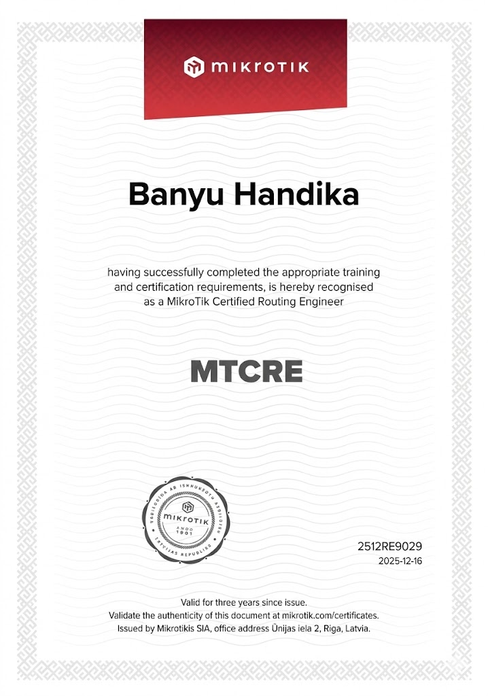

Portfolio / Sertifikasi
Koleksi sertifikasi dan pencapaian dalam bidang networking dan teknologi
Sertifikasi dasar MikroTik yang mencakup routing, wireless, firewall, dan network management.

Sertifikasi advanced untuk routing protocols, OSPF, BGP, dan network optimization.
Sertifikasi Course dasar Sistem Operasi Linux
Sertifikasi Course dasar MikroTik RouterOS
Sertifikasi Course dasar Jaringan Komputer
Sertifikasi Course dasar Operating PNet LAB
Sertifikat Penghargaan Keanggotaan OSIS SMK Prestasi Prima periode 2024-2025
Coba kata kunci atau filter lain